2024欧洲影记之瑞士
不看黑白，那是你还看不够色彩；不攀高峰，那是你还不自知平凡。
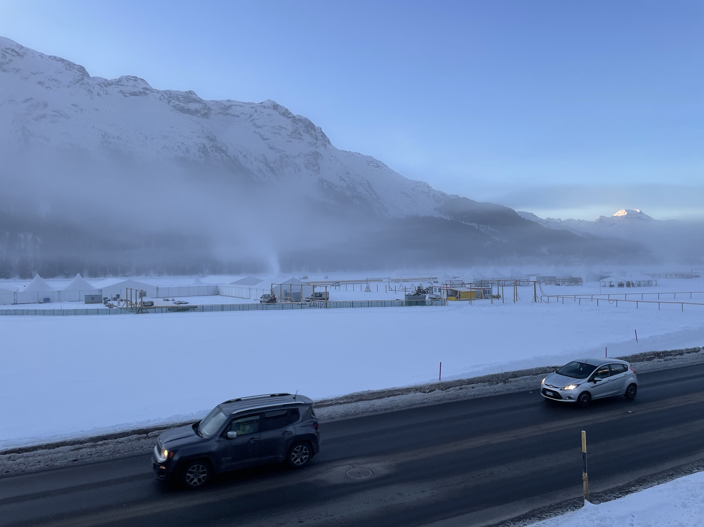
出国前，准备工作里我花时间最多的就是交通。与此前去其他国家不一样，这次我们没有选择自驾，主要的考虑是，冬季自驾山区可能的安全风险，毕竟是第一次。好在，欧洲铁路交通非常发达，瑞士尤其如此。值得一提的是，这一路我们横跨法国、瑞士和意大利三国，交通往来是没有出入境环节的。简言之，这里跨国，就和国内跨省一样。当然，铁路公司各国不同，换乘是少不了的。
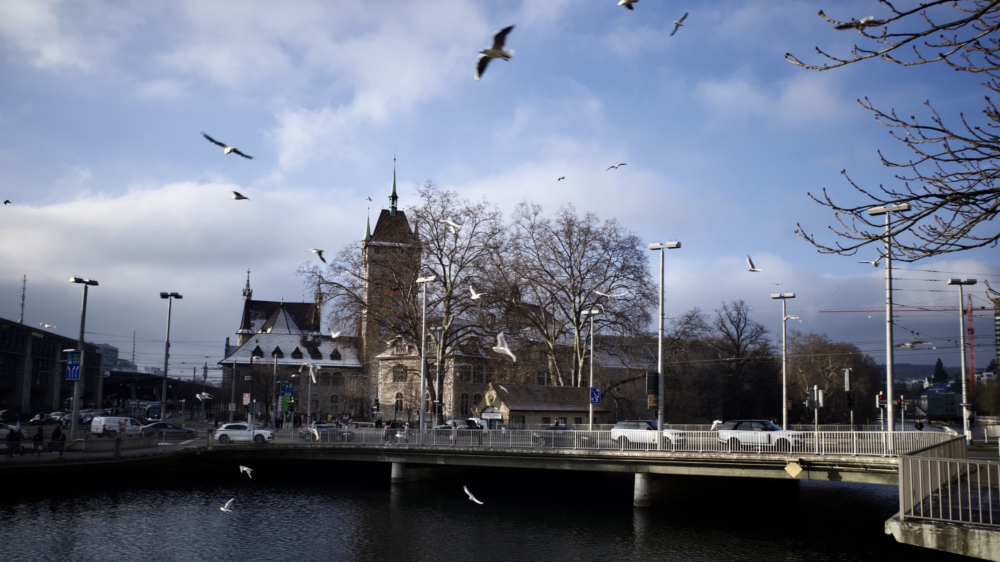
法国没能延住的一晚，只好挪到了苏黎世。这里有片一眼望不到头的湖，一出火车站就能见到漫天飞舞的水鸟。
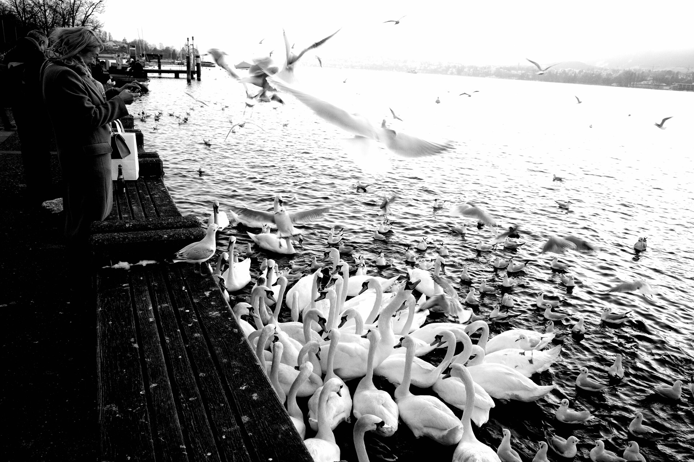
游客的投食，聚集了众多天鹅，嗯，我第一次见这么多。一旁对此无动于衷的另类，不知道是不是吃饱了，你瞅它，它也瞅你。
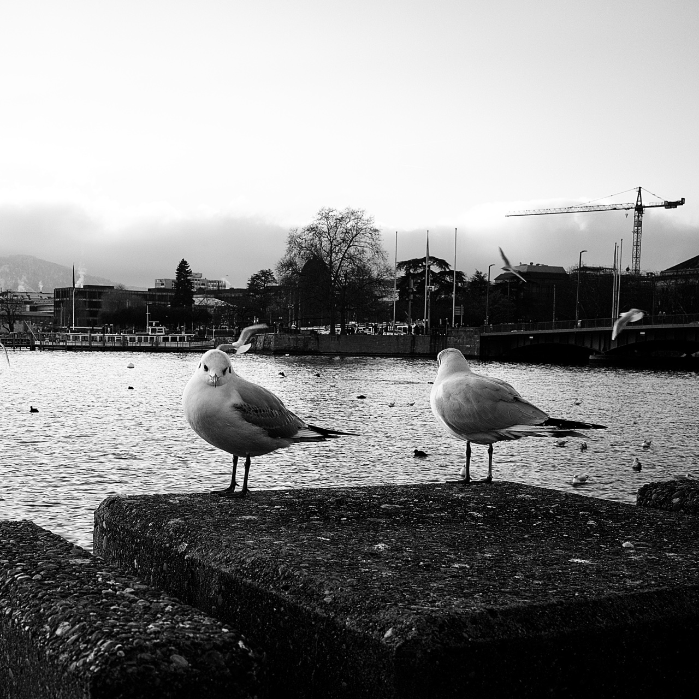
刻板印象中，瑞士出了名的有钟表、军刀和银行。但 MagicX 是啥，有懂行的朋友留言科普一下吧。
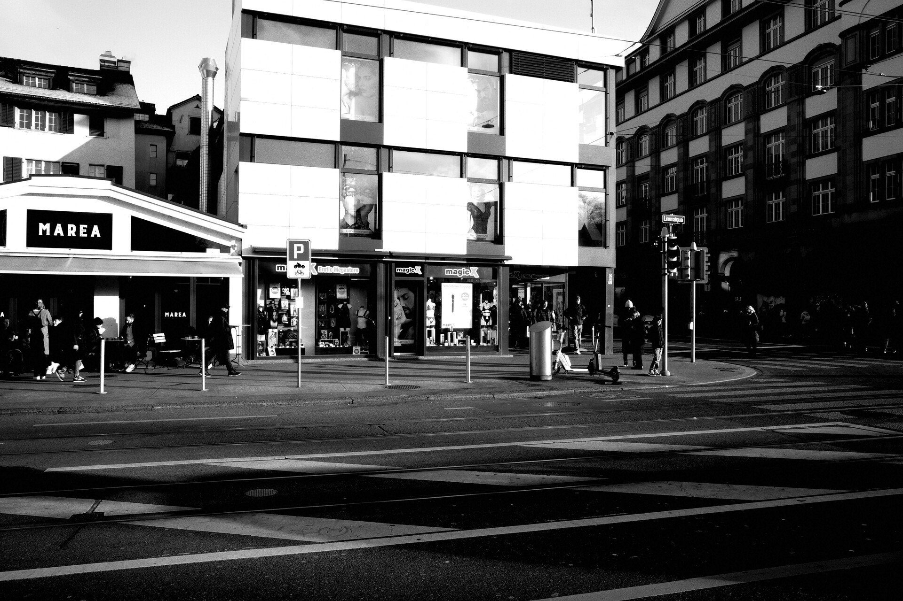
第二天一早，我们就赶往了度假胜地圣莫里茨1，开启欧洲行我个人最期待的活动🎿，没有之一。
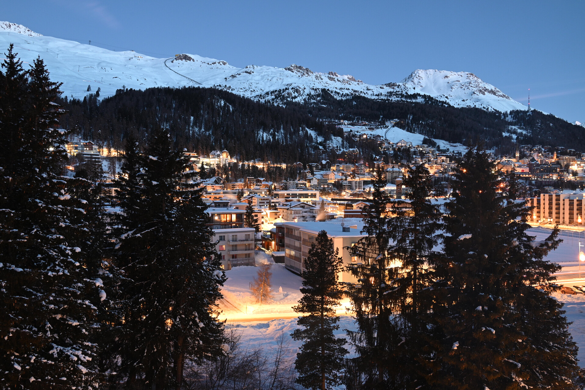
这里曾经举办过数届冬季奥运会和世界滑雪锦标赛，拥有350公里的滑雪道，是这方面国内目前无法企及。双板滑雪在欧洲非常普及，滑单板的不多见，这点和国内恰恰相反。不仅如此，滑雪在这儿可不是年轻人的专属运动。这么说吧，我倆是同组上课的成员里最年轻的，其中年龄最大的是位76岁的美国奶奶。西方人貌似有家庭滑雪度假的传统，就像那位奶奶，家里上下四代人都来了。晚上，你就会发现，餐厅里几乎都是能让大家庭围坐的十几人餐桌。
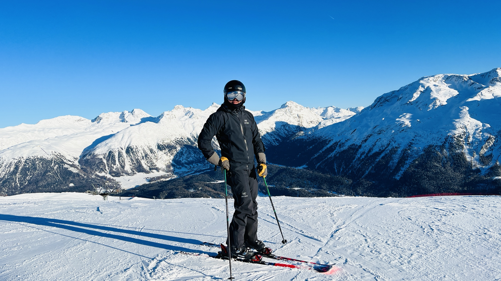
感谢队友摄影师，才有上面这张证明我滑过的照片。反正，我是顾不过来的了。放心，阿尔卑斯的冬季风光，我留给了瑞士标志——马特洪峰2。
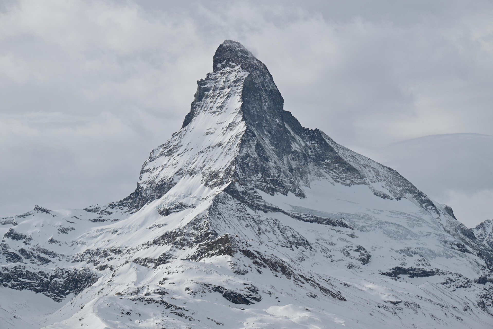
从圣莫里茨到采尔马特3，我们选择了搭乘世界上最慢的观景快车4，算是个打卡体验。除非有此执念，否则我并不推荐。理由很简单，再美，8个小时你也审美疲劳了。再则，欣赏沿途风光，大多有更经济的替代车次。
除了小镇马车、电瓶车，为了保护环境，采尔马特不允许外来车辆进入小镇，自驾的来客需要将车停在附近小镇的停车场，然后乘接驳车过来。
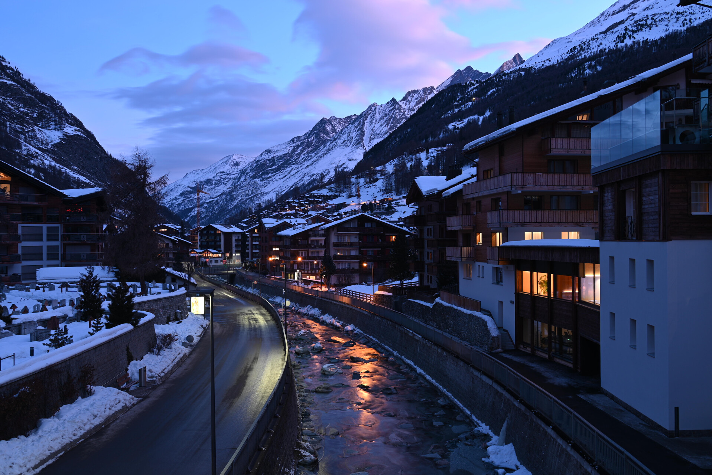
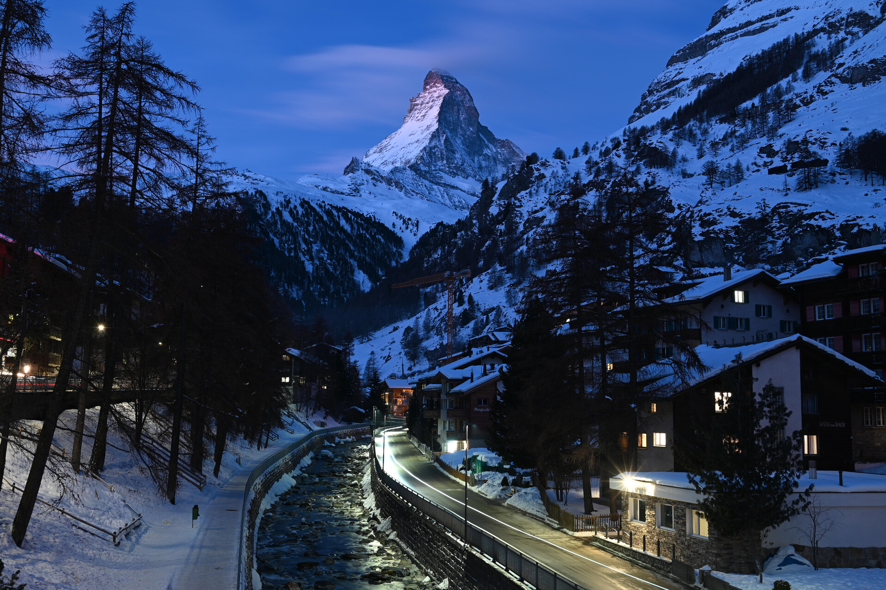
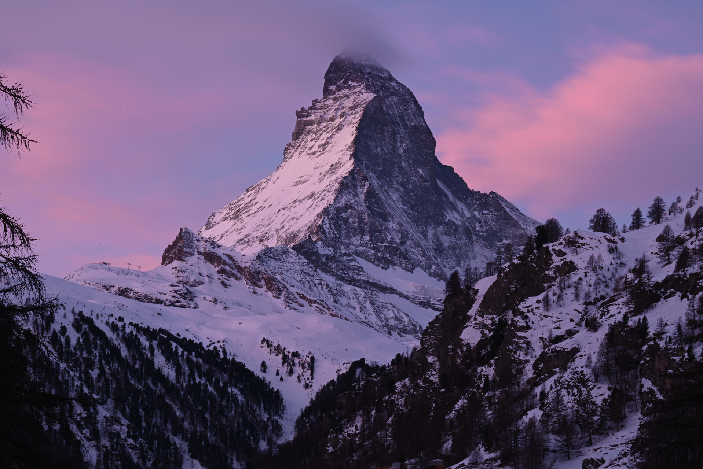
圣莫里茨吃、睡、滑了七天，这里再不能辜负美景了。来一趟轻松的 Winter Hike，容我们慢慢细品马特洪峰。
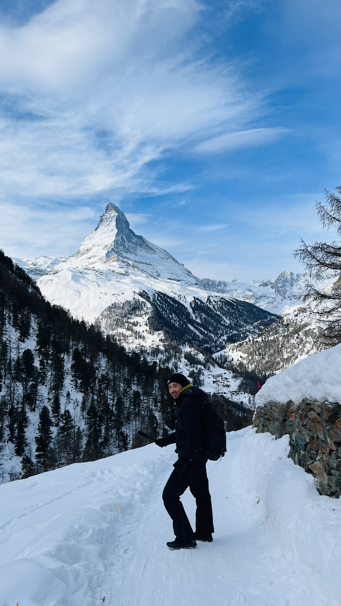
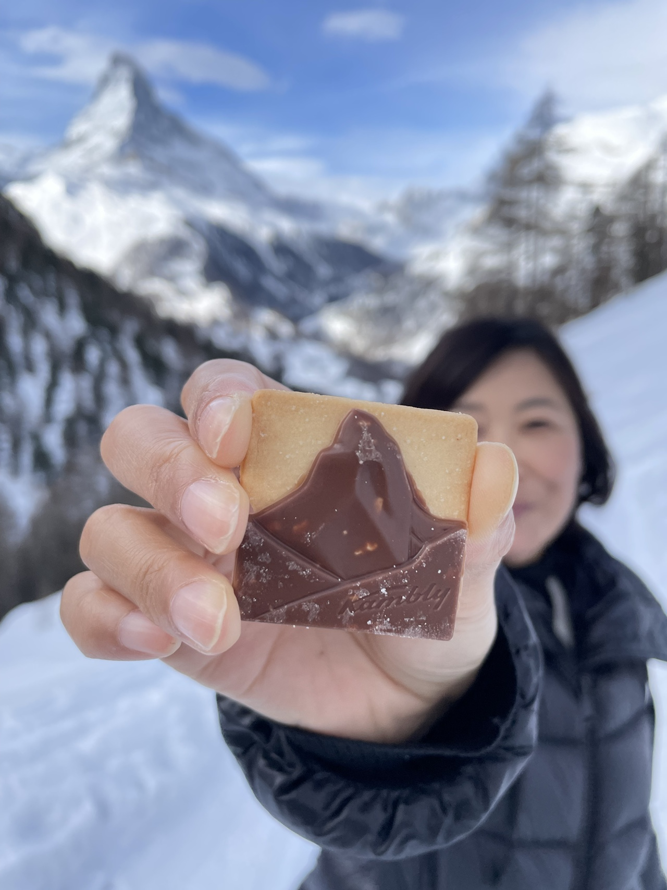
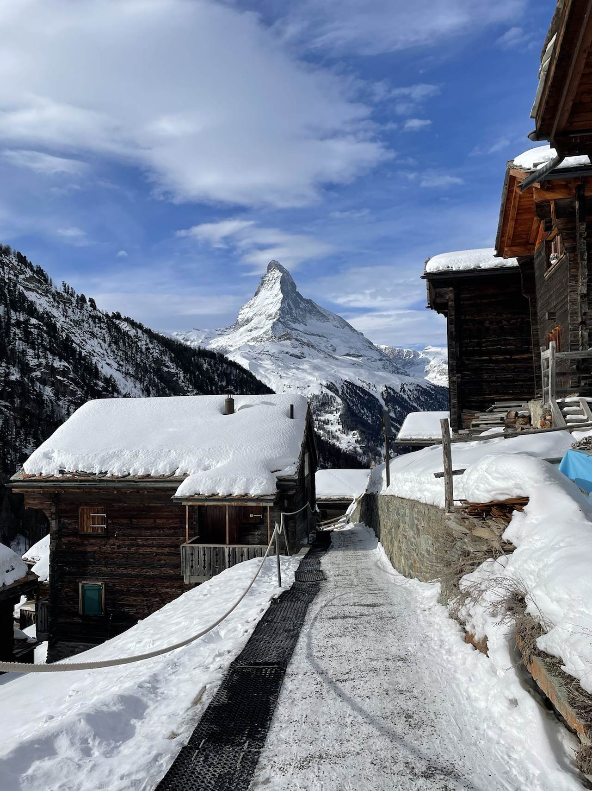
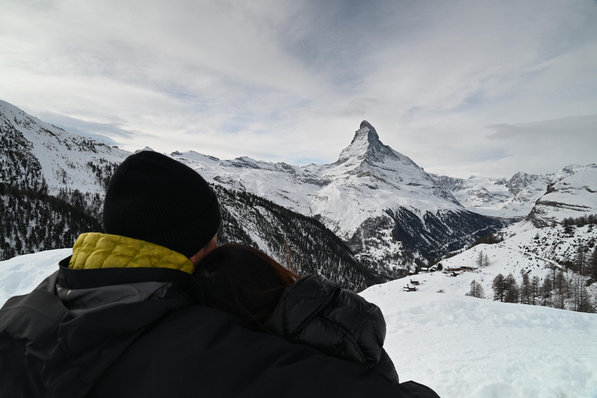
意犹未尽的话，可关注公众号，
- 发送“瑞士”，查看我在瑞士的视频。
- 发送“采尔马特”，获取Winter Hike路线信息。